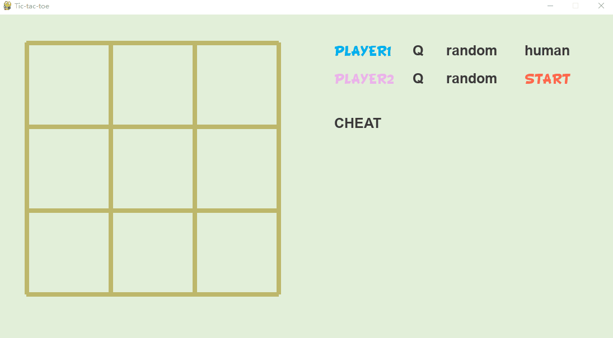

在 强化学习实战 | 表格型Q-Learning玩井字棋（三）优化，优化 中，我们经过优化和训练，得到了一个还不错的Q表格，这一节我们将用pygame实现一个有人机对战，机机对战和作弊功能的井字棋游戏。至于胜率统计这个功能，其实没有必要了——因为Q表格AI内战永远是平局。基本的pygame用法可以学习 Create a game with Pygame and Design Patterns 中的部分章节。总得来说就是逐帧绘制，循环刷新。
项目地址：码云。
机机对战
Q表格 vs Q表格

点开 CHEAT 可以查看蓝方在决策时使用的Q表格：
Q表格 vs 随机
人机对战